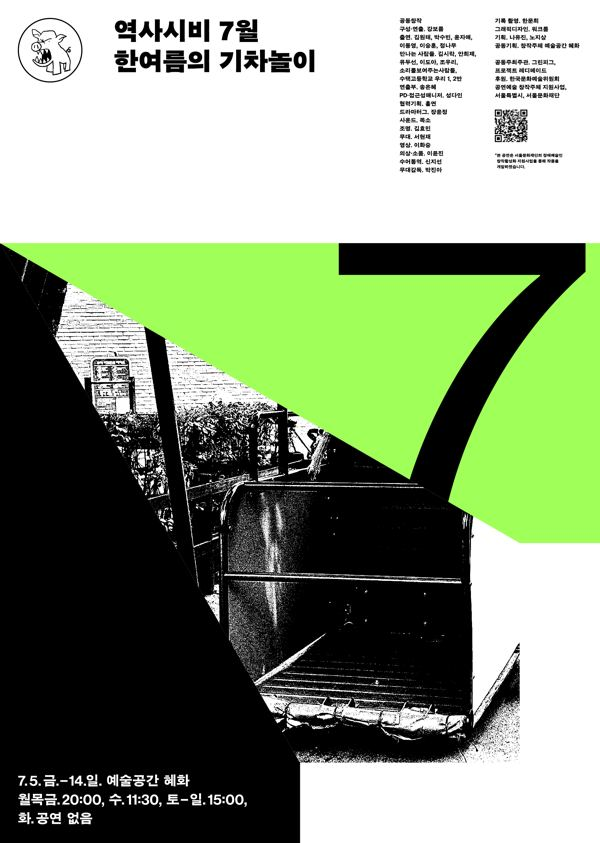

공동창작, 강보름 구성·연출

역사시비프로젝트: 승자의 관점을 거부하고 우리의 관점으로 역사를 다시 쓰는 3개년 프로젝트. 2024년 한 해 동안 매달 한 편씩, 1년 전 같은 달에 있었던 사건을 출발점으로 삼아 공연을 올렸다. 7월. 연극을 시작한 2017년부터 7월이면 늘 공연을 하거나 연습을 하고 있었다. 그 루틴과 일상은 역사가 될 수 있을까. 강보름과 그린피그 배우들의 공동창작.
2024.7.5–14 / 예술공간 혜화 - 역사시비프로젝트 7월
2024.7.10 관람 후기
이전: 〈살기 좋은 ㅇㅇ〉 | 다음: 〈후-하!〉
아카이브로 돌아가기 | 아무 작품이나
발행일 2026.11.9